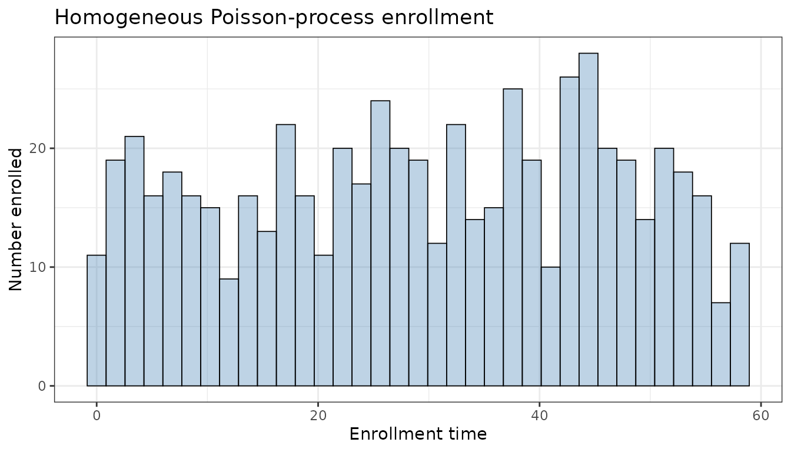
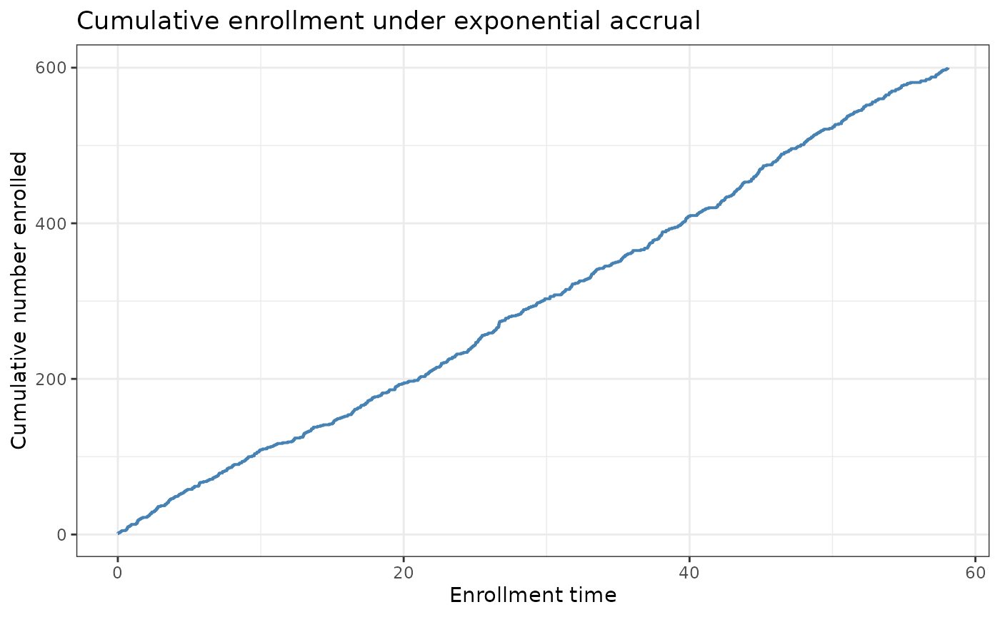
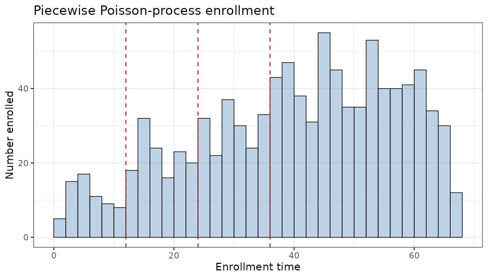
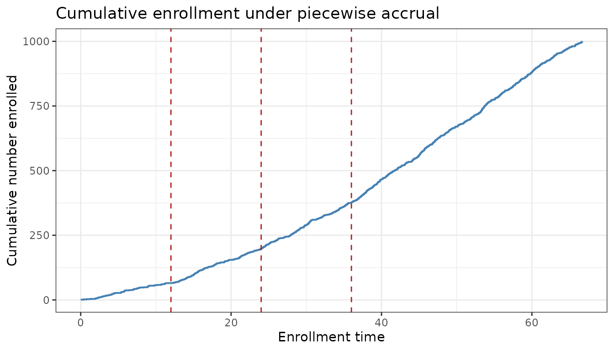

Stochastic Enrollment, Follow-up and Trial Calendar
Colin Longhurst
2026-08-03
Source:vignettes/enrollment_guide.Rmd
enrollment_guide.RmdIntroduction
In many clinical trial simulations, the endpoint model is only one part of the data-generating process. Real trials also unfold over calendar time: subjects enroll gradually, follow-up differs between early and late enrollees, and final analysis may occur at a fixed calendar date, after the last randomized subject has reached a minimum amount of follow-up, or after a target number of events has accrued. This vignette introduces the stochastic enrollment, follow-up, and trial-calendar features in endpoints. We show how to simulate homogeneous Poisson-process enrollment, piecewise Poisson-process enrollment with changing accrual rates, subject-level follow-up limits, and several trial-ending rules. These tools are especially useful for time-to-event simulations, where enrollment timing and administrative censoring directly affect observed event times and censoring indicators.
Stochastic enrollment with enrollment_details
The enrollment_details argument controls how subjects
enter the trial calendar. If no stochastic enrollment is specified, all
subjects are treated as enrolling at calendar time 0. When stochastic
enrollment is used, makeData() generates an
enrollTime column, where enrollTime is the
subject’s calendar enrollment time relative to the
first randomized subject.
In endpoints, stochastic enrollment is modeled using a Poisson-process accrual framework. In the simplest case, enrollment follows a homogeneous Poisson process with constant accrual rate \(\lambda\). Equivalently, the waiting times between consecutively enrolled subjects are exponentially distributed:
\[ G_i \sim \mathrm{Exponential}(\lambda), \]
and enrollment times are generated as cumulative sums:
\[ T_{E,i} = \sum_{m=1}^{i} G_m. \]
The first enrollment time is shifted to 0, so the trial calendar starts at the first randomized subject.
A more flexible option is piecewise Poisson-process accrual. In this setting, the accrual rate changes over calendar intervals. If the current trial calendar time lies in interval \(k\), then the waiting time to the next enrolled subject is generated using that interval’s rate:
\[ G \sim \mathrm{Exponential}(\lambda_k). \]
If the proposed next enrollment crosses a cutpoint, the process advances to that cutpoint and continues using the next interval’s rate. This allows users to represent common trial accrual patterns such as slow start-up, ramp-up, plateau enrollment, or temporary enrollment pauses.
For this section, we use a single continuous endpoint so that we can focus entirely on enrollment behavior.
Homogeneous Poisson-process enrollment
Here we demonstrate the simple case when
enrollment_distribution = "exponential". In this example,
we assume a two-arm trial with 300 subjects per arm and a single
continuous endpoint. We set
enrollment_exponential_rate = 10 meaning that the trial
enrolls, on average, 10 subjects per unit of calendar time.
ep1 <- list(
endpoint_type = "continuous",
baseline_mean = 10,
sd = 5,
trt_effect = -2
)
sim_exp <- makeData(
correlation_matrix = NULL,
sample_size_per_group = 300,
SEED = 101,
endpoint_details = list(ep1),
enrollment_details = list(
enrollment_distribution = "exponential",
enrollment_exponential_rate = 10
)
)
dat_exp <- as.data.frame(sim_exp)When enrollment_details() is included, the resulting dataframe
includes a enrollTime column:
| Cont_1 | trt | enrollTime |
|---|---|---|
| 8.369818 | 0 | 33.367925 |
| 1.460358 | 0 | 24.450194 |
| 12.762309 | 0 | 46.953874 |
| 12.030840 | 0 | 35.963352 |
| 6.625281 | 0 | 3.946336 |
| 7.378786 | 0 | 44.816368 |
The constant enrollment rate can be visualized using a histogram or density plot:
ggplot2::ggplot(dat_exp, aes(x = enrollTime)) +
geom_histogram(bins = 35,fill = "steelblue", alpha = 0.35,
color = "black",linewidth = 0.3) +
labs(
x = "Enrollment time",
y ="Number enrolled",
title = "Homogeneous Poisson-process enrollment",) +
theme_bw()
Because the rate is constant, the slope of the cumulative enrollment curve is also constant:
enroll_curve_exp <- dat_exp %>%
arrange(enrollTime) %>%
mutate(cumulative_n = row_number())
ggplot2::ggplot(enroll_curve_exp, aes(x = enrollTime, y = cumulative_n)) +
geom_step(color = "steelblue", linewidth = 0.7) +
#geom_vline(
# xintercept = cutpoints_piece[-c(1, length(cutpoints_piece))],
# linetype = "dashed",
# color = "firebrick"
#) +
labs(
x = "Enrollment time",
y = "Cumulative number enrolled",
title = "Cumulative enrollment under exponential accrual"
) +
theme_bw()
Piecewise Poisson-process enrollment
The piecewise option allows the accrual rate to change
across pre-specified calendar intervals. This is useful when the
expected enrollment pattern is not constant over time, for example if
recruitment starts slowly, accelerates as sites open, and then levels
off once the trial is fully active.
In the example below, we simulate a two-arm trial with 200 subjects per arm and the same continuous endpoint as above. We specify four enrollment intervals:
- calendar times 0 to 12 with rate 5 subjects per unit time,
- calendar times 12 to 24 with rate 10 subjects per unit time,
- calendar times 24 to 36 with rate 15 subjects per unit time, and
- calendar times 36 to 52 with rate 20 subjects per unit time.
sim_piece <- makeData(
correlation_matrix = NULL,
sample_size_per_group = 500,
SEED = 203,
endpoint_details = list(ep1),
enrollment_details = list(
enrollment_distribution = "piecewise",
piecewise_enrollment_cutpoints = c(0, 12, 24, 36, 52),
piecewise_enrollment_rates = c(5, 10, 15, 20)
)
)
dat_piece <- as.data.frame(sim_piece)
cutpoints_piece <- c(0, 12, 24, 36, 52)
rates_piece <- c(5, 10, 15, 20)
interval_labels_piece <- c("[0,12)", "[12,24)", "[24,36)", "[36,52)", "[52,Inf)")
tail_length_piece <- max(dat_piece$enrollTime) - tail(cutpoints_piece, 1)
interval_summary_piece <- tibble(
enroll_interval = factor(interval_labels_piece, levels = interval_labels_piece),
interval_length = c(diff(cutpoints_piece), NA_real_),
rate_expected = c(rates_piece, tail(rates_piece, 1))
) %>%
left_join(
dat_piece %>%
mutate(
enroll_interval = cut(
enrollTime,
breaks = c(cutpoints_piece, Inf),
right = FALSE,
include.lowest = TRUE,
labels = interval_labels_piece
)
) %>%
count(enroll_interval, name = "n_enrolled", .drop = FALSE),
by = "enroll_interval"
) %>%
mutate(
n_expected = interval_length * rate_expected,
n_expected = if_else(
is.na(interval_length),
nrow(dat_piece) - sum(n_expected, na.rm = TRUE),
n_expected
),
rate_observed = case_when(
is.na(interval_length) & n_enrolled == 0 ~ 0,
is.na(interval_length) ~ n_enrolled / tail_length_piece,
TRUE ~ n_enrolled / interval_length
)
) %>%
select(
enroll_interval,
n_enrolled,
n_expected,
rate_observed,
rate_expected
)
enroll_curve_piece <- dat_piece %>%
arrange(enrollTime) %>%
mutate(cumulative_n = row_number())The table below shows the realized number of enrolled subjects in each calendar interval. Because enrollment is stochastic, the observed counts will vary from run to run even when the target piecewise rates are fixed. The final row represents the remaining subjects enrolled after the last user-specified cutpoint. Please note that the last piecewise enrollment rate continues beyond the final cutpoint until all planned subjects have enrolled.
interval_summary_piece %>%
knitr::kable(
caption = "Observed enrollment by calendar interval"
)| enroll_interval | n_enrolled | n_expected | rate_observed | rate_expected |
|---|---|---|---|---|
| [0,12) | 65 | 60 | 5.416667 | 5 |
| [12,24) | 133 | 120 | 11.083333 | 10 |
| [24,36) | 178 | 180 | 14.833333 | 15 |
| [36,52) | 329 | 320 | 20.562500 | 20 |
| [52,Inf) | 295 | 320 | 20.070719 | 20 |
The histogram below shows how the distribution of enrollment times changes as the accrual rate increases across intervals.
ggplot2::ggplot(dat_piece, aes(x = enrollTime)) +
geom_histogram(
binwidth = 2,
boundary = 0,
fill = "steelblue",
alpha = 0.35,
color = "black",
linewidth = 0.3
) +
geom_vline(
xintercept = cutpoints_piece[-c(1, length(cutpoints_piece))],
linetype = "dashed",
color = "firebrick"
) +
labs(
x = "Enrollment time",
y = "Number enrolled",
title = "Piecewise Poisson-process enrollment"
) +
theme_bw()
Finally, the cumulative enrollment curve makes the changing accrual pattern especially clear. The slope becomes steeper in later intervals because the piecewise enrollment rate is larger.
ggplot2::ggplot(enroll_curve_piece, aes(x = enrollTime, y = cumulative_n)) +
geom_step(color = "steelblue", linewidth = 0.7) +
geom_vline(
xintercept = cutpoints_piece[-c(1, length(cutpoints_piece))],
linetype = "dashed",
color = "firebrick"
) +
labs(
x = "Enrollment time",
y = "Cumulative number enrolled",
title = "Cumulative enrollment under piecewise accrual"
) +
theme_bw()
Patient Follow-Up and Trial Duration with
followup_details and trial_end_details
The followup_details argument controls subject-level
follow-up limits after enrollment. It has two fields:
-
min_followup: a planned minimum follow-up time, mainly used by trial-ending rules such as"last_patient_min_followup"orrequire_min_followup = TRUEin event-driven trials. -
max_followup: a hard cap on how much follow-up any one subject can contribute.
Conceptually, endpoints first determines each subject’s calendar enrollment time, then determines the overall trial end time, and finally computes each subject’s available follow-up as:
\[ \mathrm{availableFollowup}_i = \min\left(\mathrm{max\_followup}, \, \mathrm{trial\_end\_time} - T_{E,i}\right), \]
with truncation at 0 if a subject enrolls after the effective trial
end. If max_followup is omitted, follow-up is limited only
by the trial end. If min_followup is omitted, it does not
constrain when the trial is allowed to end.
A simple example is:
followup_details <- list(
min_followup = 6,
max_followup = 18
)This means the design aims for the last randomized subject to have at least 6 time units of follow-up before final analysis, while no individual subject can contribute more than 18 time units of follow-up.
The trial_end_details argument controls when the trial
stops on the calendar time scale. In endpoints, this can
be handled in several ways:
-
type = "none": no calendar-based trial end is imposed. -
type = "fixed_calendar": the trial ends at a user-specified calendar time. -
type = "last_patient_min_followup": the trial ends once the last randomized subject has reachedmin_followup. -
type = "event_driven": the trial ends when a target number of events is observed for a specified time-to-event endpoint.
For event-driven designs, trial_end_details also allows
the user to specify which endpoint drives stopping
(event_endpoint), how many events are required
(target_events), whether a minimum follow-up constraint
must also be respected (require_min_followup), and what
should happen if the event target is not reached
(target_not_reached together with an optional
max_trial_duration).
In particular, require_min_followup = TRUE is useful
when the trial should not stop immediately at the moment the event
target is reached. Instead, the final analysis is delayed until both
conditions are satisfied: the required number of events has occurred and
the last randomized subject has reached min_followup. This
is a common way to combine an event-driven stopping rule with a design
requirement that late enrollees still contribute a minimum amount of
follow-up.
In other words, followup_details determines how much
follow-up each subject can contribute, while
trial_end_details determines when the trial is allowed to
stop. These two settings work together to define the final
availableFollowup for each enrolled subject.
Example: fixed calendar trial end
The simplest trial-ending rule is a fixed calendar cutoff. In this
setting, the user directly specifies the final analysis time through
trial_end_details$trial_end_time, and each subject’s
follow-up is then determined by how early or late they entered the
study.
To illustrate, consider a two-arm time-to-event trial with 100
subjects per arm. Suppose the annual event rate in the control group is
30%, the treatment hazard ratio is 0.6, and there is also 15% random
censoring. We measure time in months, so we convert the annual event
probability into a monthly exponential hazard and use
rate_from_prob() to obtain an approximate random censoring
rate.
baseline_rate_fixed <- rate_from_prob(
target_prob = 0.30,
mode = "admin",
admin_time = 12
)
censor_rate_fixed <- rate_from_prob(
target_prob = 0.85,
mode = "simple",
event_rate = baseline_rate_fixed
)
ep_tte_fixed <- list(
endpoint_type = "tte",
baseline_rate = baseline_rate_fixed,
trt_effect = log(0.6),
censoring_rate = censor_rate_fixed,
fatal_event = TRUE
)In the example below, we assume moderate exponential enrollment and set a fixed calendar trial end at 30 months.
sim_tte_fixed <- makeData(
correlation_matrix = NULL,
sample_size_per_group = 100,
SEED = 41,
endpoint_details = list(ep_tte_fixed),
enrollment_details = list(
enrollment_distribution = "exponential",
enrollment_exponential_rate = 12
),
trial_end_details = list(
type = "fixed_calendar",
trial_end_time = 30
),
non_fatal_censors_fatal = FALSE,
target_correlation = FALSE
)
dat_tte_fixed <- as.data.frame(sim_tte_fixed)
tc_tte_fixed <- sim_tte_fixed$meta$trial_calendar
tte_fixed_summary <- tibble(
trial_end_time = tc_tte_fixed$trial_end_time,
max_enroll_time = max(dat_tte_fixed$enrollTime),
mean_available_followup = mean(dat_tte_fixed$availableFollowup),
observed_events = sum(dat_tte_fixed$Status_1)
)
tte_fixed_summary %>%
knitr::kable(
digits = 2,
caption = "Fixed calendar trial end"
)| trial_end_time | max_enroll_time | mean_available_followup | observed_events |
|---|---|---|---|
| 30 | 17.85 | 20.96 | 63 |
Because the trial always ends at calendar time 30, earlier enrollees have more potential follow-up than later enrollees. In this design, the resulting follow-up is approximately \[ \mathrm{availableFollowup}_i = \min( 30 - T_{E,i}), \] truncated at 0 if a subject enrolls after the fixed calendar cutoff.
dat_tte_fixed %>%
select(trt, TTE_1, Status_1, enrollTime, availableFollowup) %>%
arrange(enrollTime) %>%
head() %>%
knitr::kable(
digits = 2,
caption = "First six patients enrolled showing demonstrating fixed follow-up time"
)| trt | TTE_1 | Status_1 | enrollTime | availableFollowup |
|---|---|---|---|---|
| 0 | 1.08 | 1 | 0.00 | 30.00 |
| 1 | 29.92 | 0 | 0.08 | 29.92 |
| 0 | 24.83 | 1 | 0.29 | 29.71 |
| 0 | 29.70 | 0 | 0.30 | 29.70 |
| 1 | 29.54 | 0 | 0.46 | 29.54 |
| 1 | 23.95 | 0 | 0.49 | 29.51 |
Example: last-patient-minimum-follow-up design
We now move to a slightly more design-driven rule, where the trial
stays open until the last randomized subject has reached a minimum
amount of follow-up. To illustrate these ideas, consider a two-arm
time-to-event trial with 100 subjects per arm. Suppose the annual event
rate in the control group is 30%, the treatment hazard ratio is 0.6, and
there is also 15% random censoring. We measure time in months, so we
first convert the annual event rate into a monthly exponential hazard.
We then use followup_details to require at least 24 months
of follow-up for the last randomized subject, while capping any one
subject’s follow-up at 36 months.
baseline_rate_monthly <- rate_from_prob(
target_prob = 0.30,
mode = "admin",
admin_time = 12
)
censor_rate_monthly <- rate_from_prob(
target_prob = 0.85,
mode = "simple",
event_rate = baseline_rate_monthly
)
ep_tte_followup <- list(
endpoint_type = "tte",
baseline_rate = baseline_rate_monthly,
trt_effect = log(0.6),
censoring_rate = censor_rate_monthly,
fatal_event = TRUE
)In the first version, we assume a moderate exponential enrollment rate of 15 subjects per month across the trial.
sim_tte_mod <- makeData(
correlation_matrix = NULL,
sample_size_per_group = 100,
SEED = 42,
endpoint_details = list(ep_tte_followup),
enrollment_details = list(
enrollment_distribution = "exponential",
enrollment_exponential_rate = 15
),
followup_details = list(
min_followup = 24,
max_followup = 36
),
trial_end_details = list(
type = "last_patient_min_followup"
),
non_fatal_censors_fatal = FALSE,
target_correlation = FALSE
)
dat_tte_mod <- as.data.frame(sim_tte_mod)
tc_tte_mod <- sim_tte_mod$meta$trial_calendar
tte_mod_summary <- tibble(
scenario = "Moderate enrollment",
enrollment_rate = 15,
trial_end_time = tc_tte_mod$trial_end_time,
max_enroll_time = max(dat_tte_mod$enrollTime),
mean_available_followup = mean(dat_tte_mod$availableFollowup),
observed_events = sum(dat_tte_mod$Status_1)
)
tte_mod_summary %>%
knitr::kable(
digits = 2,
caption = "Moderate enrollment with last-patient minimum follow-up"
)| scenario | enrollment_rate | trial_end_time | max_enroll_time | mean_available_followup | observed_events |
|---|---|---|---|---|---|
| Moderate enrollment | 15 | 37.8 | 13.8 | 30.68 | 87 |
Because the trial ends when the last randomized subject has 24 months
of follow-up, earlier enrollees contribute more than 24 months, up to
the maximum cap of 36 months. The resulting dataset includes both
enrollTime and availableFollowup:
dat_tte_mod %>%
select(trt, TTE_1, Status_1, enrollTime, availableFollowup) %>%
head() %>%
knitr::kable(
digits = 2,
caption = "Example rows from the moderate-enrollment simulation"
)| trt | TTE_1 | Status_1 | enrollTime | availableFollowup |
|---|---|---|---|---|
| 0 | 29.03 | 0 | 8.77 | 29.03 |
| 0 | 33.85 | 0 | 3.96 | 33.85 |
| 0 | 11.34 | 1 | 2.29 | 35.52 |
| 0 | 16.02 | 0 | 2.44 | 35.37 |
| 0 | 30.75 | 0 | 7.05 | 30.75 |
| 0 | 24.63 | 1 | 10.88 | 26.92 |
Now suppose we change only the enrollment speed, making accrual slower at 8 subjects per month while keeping all endpoint and follow-up settings fixed.
sim_tte_slow <- makeData(
correlation_matrix = NULL,
sample_size_per_group = 100,
SEED = 42,
endpoint_details = list(ep_tte_followup),
enrollment_details = list(
enrollment_distribution = "exponential",
enrollment_exponential_rate = 8
),
followup_details = list(
min_followup = 24,
max_followup = 36
),
trial_end_details = list(
type = "last_patient_min_followup"
),
non_fatal_censors_fatal = FALSE,
target_correlation = FALSE
)
dat_tte_slow <- as.data.frame(sim_tte_slow)
tc_tte_slow <- sim_tte_slow$meta$trial_calendar
tte_compare <- tibble(
scenario = c("Moderate enrollment", "Slower enrollment"),
enrollment_rate = c(15, 8),
trial_end_time = c(tc_tte_mod$trial_end_time, tc_tte_slow$trial_end_time),
max_enroll_time = c(max(dat_tte_mod$enrollTime), max(dat_tte_slow$enrollTime)),
mean_available_followup = c(
mean(dat_tte_mod$availableFollowup),
mean(dat_tte_slow$availableFollowup)
),
observed_events = c(sum(dat_tte_mod$Status_1), sum(dat_tte_slow$Status_1))
)
tte_compare %>%
knitr::kable(
digits = 2,
caption = "Slower enrollment produces more observed follow-up and events"
)| scenario | enrollment_rate | trial_end_time | max_enroll_time | mean_available_followup | observed_events |
|---|---|---|---|---|---|
| Moderate enrollment | 15 | 37.80 | 13.80 | 30.68 | 87 |
| Slower enrollment | 8 | 49.88 | 25.88 | 33.06 | 90 |
In this paired comparison, the slower enrollment scenario has a later last patient in, so the overall trial lasts longer on the calendar scale. That gives earlier subjects more opportunity to reach the 36-month follow-up cap, which in turn increases the average available follow-up and the observed number of events.
Example: event-driven trial with a fatal stopping endpoint
We next consider an event-driven design with two time-to-event endpoints. The first endpoint is fatal and is used to trigger the stopping rule. The second endpoint is non-fatal and is included to illustrate how the overall trial duration can affect the number of secondary events observed by the time the fatal endpoint reaches its event target.
For this example, we use a modest positive dependence between the two TTE endpoints, an annual fatal event rate of 20% in the control group, and an annual non-fatal event rate of 40%. We use hazard ratios of 0.75 for the fatal endpoint and 0.85 for the non-fatal endpoint. To keep the example realistic, we also include independent random censoring for both endpoints.
cor_tte2 <- corr_make(
num_endpoints = 2,
values = rbind(c(1, 2, 0.25))
)
fatal_rate_monthly <- rate_from_prob(
target_prob = 0.20,
mode = "admin",
admin_time = 12
)
nonfatal_rate_monthly <- rate_from_prob(
target_prob = 0.40,
mode = "admin",
admin_time = 12
)
ep_fatal <- list(
endpoint_type = "tte",
baseline_rate = fatal_rate_monthly,
trt_effect = log(0.75),
censoring_rate = 0.01,
fatal_event = TRUE
)
ep_nonfatal <- list(
endpoint_type = "tte",
baseline_rate = nonfatal_rate_monthly,
trt_effect = log(0.85),
censoring_rate = 0.015,
fatal_event = FALSE
)In the first scenario, enrollment follows a simple homogeneous
Poisson process with exponential inter-arrival times. We stop the trial
once 70 fatal events have been observed on TTE_1, and we
cap individual follow-up at 48 months.
sim_event_exp <- makeData(
correlation_matrix = cor_tte2,
sample_size_per_group = 150,
SEED = 77,
endpoint_details = list(ep_fatal, ep_nonfatal),
enrollment_details = list(
enrollment_distribution = "exponential",
enrollment_exponential_rate = 12
),
followup_details = list(
max_followup = 48
),
trial_end_details = list(
type = "event_driven",
event_endpoint = "TTE_1",
target_events = 70
),
non_fatal_censors_fatal = FALSE,
target_correlation = FALSE
)
dat_event_exp <- as.data.frame(sim_event_exp)
tc_event_exp <- sim_event_exp$meta$trial_calendar
event_exp_summary <- tibble(
scenario = "Exponential enrollment",
trial_end_time = tc_event_exp$trial_end_time,
fatal_events = sum(dat_event_exp$Status_1),
nonfatal_events = sum(dat_event_exp$Status_2),
mean_available_followup = mean(dat_event_exp$availableFollowup)
)
event_exp_summary %>%
knitr::kable(
digits = 2,
caption = "Event-driven trial with exponential enrollment"
)| scenario | trial_end_time | fatal_events | nonfatal_events | mean_available_followup |
|---|---|---|---|---|
| Exponential enrollment | 33.59 | 70 | 96 | 20.14 |
The realized calendar quantities are stored in
sim_event_exp$meta$trial_calendar, which includes the trial
end time, the stopping reason, whether the event target was reached, and
the number of events observed at the realized trial end.
Now we hold the endpoint and stopping-rule settings fixed, but replace the simple exponential accrual model with a piecewise enrollment pattern that starts more slowly and accelerates later in the trial.
sim_event_piece <- makeData(
correlation_matrix = cor_tte2,
sample_size_per_group = 150,
SEED = 77,
endpoint_details = list(ep_fatal, ep_nonfatal),
enrollment_details = list(
enrollment_distribution = "piecewise",
piecewise_enrollment_cutpoints = c(0, 12, 24, 36),
piecewise_enrollment_rates = c(3, 8, 15)
),
followup_details = list(
max_followup = 48
),
trial_end_details = list(
type = "event_driven",
event_endpoint = "TTE_1",
target_events = 70
),
non_fatal_censors_fatal = FALSE,
target_correlation = FALSE
)
dat_event_piece <- as.data.frame(sim_event_piece)
tc_event_piece <- sim_event_piece$meta$trial_calendar
event_compare <- tibble(
scenario = c("Exponential enrollment", "Piecewise enrollment"),
trial_end_time = c(
tc_event_exp$trial_end_time,
tc_event_piece$trial_end_time
),
fatal_events = c(
sum(dat_event_exp$Status_1),
sum(dat_event_piece$Status_1)
),
nonfatal_events = c(
sum(dat_event_exp$Status_2),
sum(dat_event_piece$Status_2)
),
mean_available_followup = c(
mean(dat_event_exp$availableFollowup),
mean(dat_event_piece$availableFollowup)
)
)
event_compare %>%
knitr::kable(
digits = 2,
caption = "Recruitment pattern affects event-driven trial duration and secondary events"
)| scenario | trial_end_time | fatal_events | nonfatal_events | mean_available_followup |
|---|---|---|---|---|
| Exponential enrollment | 33.59 | 70 | 96 | 20.14 |
| Piecewise enrollment | 46.05 | 70 | 109 | 22.12 |
In both scenarios, the stopping rule is driven by the fatal endpoint, so the number of observed fatal events is similar by construction. However, the piecewise accrual pattern stretches the trial over a longer calendar duration, which gives more time for secondary non-fatal events to accrue before the fatal endpoint reaches its target. This is one of the main reasons it can be important to model enrollment explicitly when simulating event-driven designs.
Event-driven stopping with
require_min_followup = TRUE
In some event-driven trials, reaching the target number of events is
not sufficient by itself. Investigators may also want the last
randomized subject to contribute a minimum amount of follow-up before
the final analysis. This can be enforced by setting
require_min_followup = TRUE together with
followup_details$min_followup.
sim_event_no_min <- makeData(
correlation_matrix = cor_tte2,
sample_size_per_group = 150,
SEED = 77,
endpoint_details = list(ep_fatal, ep_nonfatal),
enrollment_details = list(
enrollment_distribution = "exponential",
enrollment_exponential_rate = 12
),
followup_details = list(
min_followup = 12,
max_followup = 48
),
trial_end_details = list(
type = "event_driven",
event_endpoint = "TTE_1",
target_events = 70,
require_min_followup = FALSE
),
non_fatal_censors_fatal = FALSE,
target_correlation = FALSE
)
sim_event_with_min <- makeData(
correlation_matrix = cor_tte2,
sample_size_per_group = 150,
SEED = 77,
endpoint_details = list(ep_fatal, ep_nonfatal),
enrollment_details = list(
enrollment_distribution = "exponential",
enrollment_exponential_rate = 12
),
followup_details = list(
min_followup = 12,
max_followup = 48
),
trial_end_details = list(
type = "event_driven",
event_endpoint = "TTE_1",
target_events = 70,
require_min_followup = TRUE
),
non_fatal_censors_fatal = FALSE,
target_correlation = FALSE
)
dat_event_no_min <- as.data.frame(sim_event_no_min)
dat_event_with_min <- as.data.frame(sim_event_with_min)
tc_event_no_min <- sim_event_no_min$meta$trial_calendar
tc_event_with_min <- sim_event_with_min$meta$trial_calendar
event_min_compare <- tibble(
scenario = c("No minimum follow-up", "Require minimum follow-up"),
trial_end_time = c(
tc_event_no_min$trial_end_time,
tc_event_with_min$trial_end_time
),
trial_end_reason = c(
tc_event_no_min$trial_end_reason,
tc_event_with_min$trial_end_reason
),
n_events_at_end = c(
tc_event_no_min$n_events_at_end,
tc_event_with_min$n_events_at_end
),
mean_available_followup = c(
mean(dat_event_no_min$availableFollowup),
mean(dat_event_with_min$availableFollowup)
)
)
event_min_compare %>%
knitr::kable(
digits = 2,
caption = "Minimum follow-up can delay an event-driven final analysis"
)| scenario | trial_end_time | trial_end_reason | n_events_at_end | mean_available_followup |
|---|---|---|---|---|
| No minimum follow-up | 33.59 | event_target | 70 | 20.14 |
| Require minimum follow-up | 36.47 | event_target_plus_min_followup | 77 | 23.02 |
When require_min_followup = TRUE, the trial does not
stop immediately when the fatal endpoint first reaches its event target.
Instead, the final analysis is delayed until the last randomized subject
has also reached the required minimum follow-up.
If the event target is not reached
By default, an event-driven trial errors if the requested event
target cannot be reached under the simulated design. The
target_not_reached argument allows the user to choose a
fallback rule instead. In the example below, we request an intentionally
unattainable fatal event target and ask the simulation to fall back to
"last_patient_min_followup".
sim_event_fallback <- suppressWarnings(
makeData(
correlation_matrix = cor_tte2,
sample_size_per_group = 80,
SEED = 90,
endpoint_details = list(ep_fatal, ep_nonfatal),
enrollment_details = list(
enrollment_distribution = "exponential",
enrollment_exponential_rate = 12
),
followup_details = list(
min_followup = 12,
max_followup = 24
),
trial_end_details = list(
type = "event_driven",
event_endpoint = "TTE_1",
target_events = 1000,
target_not_reached = "last_patient_min_followup"
),
non_fatal_censors_fatal = FALSE,
target_correlation = FALSE
)
)
dat_event_fallback <- as.data.frame(sim_event_fallback)
tc_event_fallback <- sim_event_fallback$meta$trial_calendar
event_fallback_summary <- tibble(
trial_end_time = tc_event_fallback$trial_end_time,
trial_end_reason = tc_event_fallback$trial_end_reason,
event_target_reached = tc_event_fallback$event_target_reached,
n_events_at_end = tc_event_fallback$n_events_at_end
)
event_fallback_summary %>%
knitr::kable(
digits = 2,
caption = "Fallback behavior when the event target is not reached"
)| trial_end_time | trial_end_reason | event_target_reached | n_events_at_end |
|---|---|---|---|
| 24.44 | last_patient_min_followup_target_not_reached | FALSE | 31 |
Here the fatal event target is not reached, so the realized trial end
is driven by the fallback rule rather than by the event target itself. A
similar approach can be used with
target_not_reached = "max_trial_duration" together with
max_trial_duration.
sim_event_max_duration <- makeData(
correlation_matrix = cor_tte2,
sample_size_per_group = 80,
SEED = 90,
endpoint_details = list(ep_fatal, ep_nonfatal),
enrollment_details = list(
enrollment_distribution = "exponential",
enrollment_exponential_rate = 12
),
followup_details = list(
max_followup = 24
),
trial_end_details = list(
type = "event_driven",
event_endpoint = "TTE_1",
target_events = 1000,
target_not_reached = "max_trial_duration",
max_trial_duration = 30
),
non_fatal_censors_fatal = FALSE,
target_correlation = FALSE
)Subjects enrolled after the realized trial end
In an event-driven design, the realized trial end time is not known
in advance. As a result, some planned subjects may be generated with
enrollment times after the final trial cutoff. These rows remain in the
simulated dataset, but they have availableFollowup = 0 and
therefore contribute no analyzable follow-up.
sim_event_zero_fu <- makeData(
correlation_matrix = cor_tte2,
sample_size_per_group = 150,
SEED = 77,
endpoint_details = list(ep_fatal, ep_nonfatal),
enrollment_details = list(
enrollment_distribution = "exponential",
enrollment_exponential_rate = 4
),
followup_details = list(
max_followup = 48
),
trial_end_details = list(
type = "event_driven",
event_endpoint = "TTE_1",
target_events = 30
),
non_fatal_censors_fatal = FALSE,
target_correlation = FALSE
)
dat_event_zero_fu <- as.data.frame(sim_event_zero_fu)
dat_event_zero_fu %>%
filter(availableFollowup == 0) %>%
select(trt, TTE_1, Status_1, TTE_2, Status_2, enrollTime, availableFollowup) %>%
head() %>%
knitr::kable(
digits = 2,
caption = "Subjects enrolled after the realized event-driven trial end"
)| trt | TTE_1 | Status_1 | TTE_2 | Status_2 | enrollTime | availableFollowup |
|---|---|---|---|---|---|---|
| 0 | 0 | 0 | 0 | 0 | 52.47 | 0 |
| 0 | 0 | 0 | 0 | 0 | 62.69 | 0 |
| 0 | 0 | 0 | 0 | 0 | 42.97 | 0 |
| 0 | 0 | 0 | 0 | 0 | 43.19 | 0 |
| 0 | 0 | 0 | 0 | 0 | 51.12 | 0 |
| 0 | 0 | 0 | 0 | 0 | 44.97 | 0 |
These rows are usually excluded from the analysis population. In practice, the event-driven analysis set is often defined as:
dat_event_analysis <- dat_event_zero_fu %>%
filter(availableFollowup > 0)That is, subjects with availableFollowup == 0 should
typically be filtered out before summarizing or analyzing the realized
event-driven dataset.